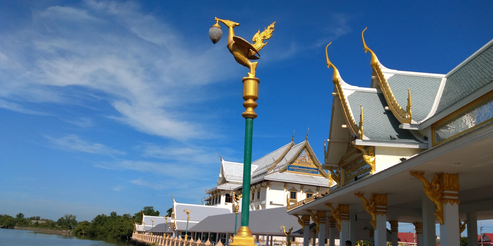
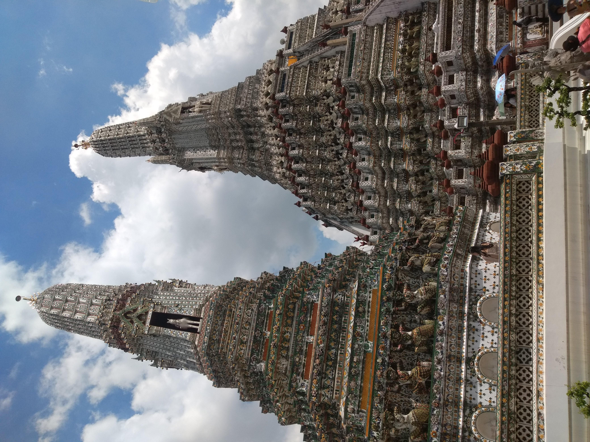

Wat Sothon Wararam Worawihan en la provicia de Chachoengsao es un placido lugar al lado del rio Bang Pakong y tan solo a 80 km de Bangkok. Un lugar muy bello y sin lugar a dudas inolvidable y cercano a Robinson, famosa cadena de centros comerciales en la que tuve la oportunidad de trabajar en diferentes provincias de Tailandia. en aquel templo hice por primera vez el tham bun (hacer merito) poniendo hojas de oro sobre una estatua de buda Wat Sothon Wararam Worawihan.

Muy cerca de la mundialmente famosa Khao San road en Bangkok se encuentra el muelle Phra Athit, en donde se puede tomar el ferry y arrivar en pocos minutos y -a muy buen precio- a uno de los lugares mas majestuosos que hay en Tailandia: el Wat Arun o el templo del amanecer que además de ser uno de los más antiguos del país también es uno de los artesanalmente mas complejos, con millones piezas incrustadas a mano en ceramica y cochas marinas hacen que la colosal estructura parezca tener luz propia en el ocaso.